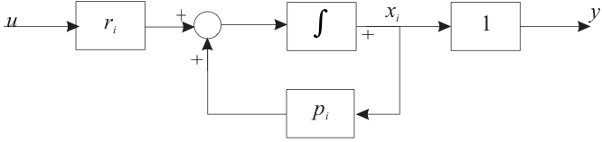
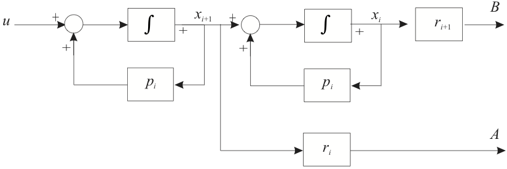

Canonical Forms
Although a state-space model may uniquely represent a given dynamic system, there is no state-space model that uniquely represents a given transfer function. That is there are many state-space models that can be transformed into a given transfer function. If one begins the analysis of a dynamic system from an analysis of the elementary dynamics then the state space model that results from such an analysis will accurately reflect the physical state variables in the system. However, if one's analysis begins from a differential equation or (equivalently) from a transfer function, then it is convenient to transform the model description into one of a small number of "standard" or canonical forms.
- Derivation of the companion form
- Example
These notes describe how a general differential equation may be converted into a state-space model.
Consider the general differential equation:
In class we will show how this can be converted into the so-called "companion form" state-space model.
We rearrange this equation so that the highest power is on the left
$$\begin{equation} \frac{d^{n}y}{dt^{n}} = -a_{n-1}\frac{d^{n-1}y}{dt^{n-1}}-a_{n-2}\frac{d^{n-2}y}{dt^{n-2}}-\cdots-a_1\frac{dy}{dt}-a_0 y + b_0 u.\end{equation}$$Let:
$$\begin{eqnarray*} x_1 &=& y \\ x_2 &=& \frac{dy}{dt} \\ x_3 & = & \frac{d^2y}{dt^2} \\ \vdots \\ x_{n-1} &=& \frac{d^{n-2}y}{dt^{n-2}} \\ x_{n} &=& \frac{d^{n-1}y}{dt^{n-1}} \end{eqnarray*}$$If we differentiate both sides of these new definitions we obtain
$$\begin{eqnarray*} \dot{x}_1 &=& \frac{dy}{dt} \\ \dot{x}_2 &=& \frac{d^2y}{dt^2} \\ \dot{x}_3 & = & \frac{d^3y}{dt^3} \\ \vdots \\ \dot{x}_{n-1} &=& \frac{d^{n-1}y}{dt^{n-1}} \\ \dot{x}_{n} &=& \frac{d^{n}y}{dt^{n}} \end{eqnarray*}$$These equations represent the left-hand-side of the state equations and if we make the substitutions we get
$$\begin{eqnarray*} \dot{x}_1 &=& x_2 \\ \dot{x}_2 &=& x_3 \\ \dot{x}_3 & = & x_4 \\ \vdots \\ \dot{x}_{n-1} &=& x_n \\ \dot{x}_{n} &=& -a_{0}x_1 -a_1x_2 - \cdots -a_{n-2}x_{n-1} -a_{n-1}x_{n} + b_0 u \end{eqnarray*}$$We then define the state vector
$$\begin{equation}\mathbf{x}=[x_1,\ x_2,\ \ldots,\ x_n]^T\end{equation}$$and the matrix form of the state equations are
$$\begin{equation}\dot{\mathbf{x}} = \left[\begin{array}{ccccc} 0 & 1 & 0 & \cdots & 0 \\ 0 & 0 & 1 & \cdots & 0 \\ \vdots & \vdots & \vdots & \ddots & \vdots \\ 0 & 0 & 0 & \cdots & 1 \\ -a_{0} & -a_{1} & -a_{2} & \cdots & -a_{n-1} \end{array}\right]\mathbf{x}+\left[\begin{array}{c} 0 \\ 0 \\ 0 \\ \vdots \\ 1 \end{array}\right]u\end{equation}$$The system matrix is in "companion form", so called because the coefficients in the final row are the same as for the differential equation. The output equation depends on the dependent variable of interest but the simplest is $y=x_1$ which gives the solution of the differential equation. Thus
$$\begin{equation}y = [1,\ 0,\ 0,\ \ldots, 0] \mathbf{x}.\end{equation}$$Transfer Function
The transfer function equivalent of this differential equation is obtained from the differential equation:
$$\begin{equation}\frac{d^{n}y}{dt^{n}} + a_{n-1}\frac{d^{n-1}y}{dt^{n-1}}+a_{n-2}\frac{d^{n-2}y}{dt^{n-2}}+\cdots+a_1\frac{dy}{dt}+a_0 y = b_0 u\end{equation}$$The transform of this equation, ignoring initial conditions, is
$$\begin{equation}\left(s^n + a_{n-1}s^{n-1}+a_{n-2}s^{n-2}+\cdots+a_1s+a_0\right)Y(s) = b_0 U(s)\end{equation}$$so the transfer function is
$$\begin{equation}G(s) = \frac{Y(s)}{U(s)} = \frac{b_0}{s^n + a_{n-1}s^{n-1}+a_{n-2}s^{n-2}+\cdots+a_1s+a_0}.\end{equation}$$Note that the numerator has no terms in $s$. We shall consider completely general case for both proper and strictly proper systems later.
or transfer function
$$\begin{equation} G(s) = \frac{Y(s)}{U(s)} = \frac{b_0}{s^n + a_{n-1}s^{n-1}+a_{n-2}s^{n-2}+\cdots+a_1s+a_0}.\end{equation}$$The state variables in this model are the so-called "phase variables" $x_1 = y$, $x_2 = dy/dt$, $\ldots$ $x_n = dy^{n-1}/dt^{n-1}$.
Companion Form
$$\begin{eqnarray*} \dot{\mathbf{x}} &=& \left[\begin{array}{ccccc} 0 & 1 & 0 & \cdots & 0 \\ 0 & 0 & 1 & \cdots & 0 \\ \vdots & \vdots & \vdots & \ddots & \vdots \\ 0 & 0 & 0 & \cdots & 1 \\ -a_{0} & -a_{1} & -a_{2} & \cdots & -a_{n-1} \end{array}\right]\mathbf{x}+\left[\begin{array}{c} 0 \\ 0 \\ 0 \\ \vdots \\ b_0 \end{array}\right]u\\ y & = & [1,\ 0,\ 0,\ \ldots, 0] \mathbf{x}.\end{eqnarray*}$$The structure of this state-space model is illustrated in Figure 1.
Now let us consider the case of a system that has derivatives of the input.
A strictly proper system has transfer function
$$\begin{equation}G(s)=\frac{Y(s)}{U(s)} = \frac{b_ms^m + b_{m-1}s^{m-1}+b_{m-2}s^{m-2}+\cdots+b_1s+b_0}{s^n + a_{n-1}s^{n-1}+a_{n-2}s^{n-2}+\cdots+a_1s+a_0}\end{equation}$$where $m<n$.
In class, we will show how this more general system converted into a state-space model.
Well, let us introduce an intermediate variable $W(s)$ and use this to split the transfer function into two parts like so:
$$\begin{equation} W(s) = \frac{1}{s^n + a_{n-1}s^{n-1}+a_{n-2}s^{n-2}+\cdots+a_1s+a_0}U(s)\end{equation}$$and
$$\begin{equation} Y(s) = \left(b_ms^m + b_{m-1}s^{m-1}+b_{m-2}s^{m-2}+\cdots+b_1s+b_0\right)W(s).\end{equation}$$Now equation (2) has the same form as the system of equation (1) with $b_0 = 1$. So if we define our first phase variable to be $X_1(s) = W(s)$ then the state matrix $\mathbf{A}$ will be the same as for the previous example and the input matrix $\mathbf{B} = \left[0, 0, \ldots, 1\right]^T$. To determine the output matrix $\mathbf{C}$ we inverse Laplace transform equation (3) to get:
$$\begin{equation} y(t) = b_m\frac{d^m}{dt^m}w(t) + b_{m-1}\frac{d^{m-1}}{dt^{m-1}}w(t)+\cdots+b_1\frac{d}{dt}w(t)+ b_0w(t).\end{equation}$$Now, since by definition $x_1(t) = w(t)$, then
$$\begin{equation} y(t) = b_mx_{m+1}(t) + b_{m-1}x_m(t)+\cdots+b_1x_2(t)+ b_0x_1(t).\end{equation}$$Where, in (5), substitutions have been made according to the definition of the phase variables.
The vector state equations are therefore:
$$\begin{eqnarray*} \dot{\mathbf{x}} &=& \left[\begin{array}{ccccc} 0 & 1 & 0 & \cdots & 0 \\ 0 & 0 & 1 & \cdots & 0 \\ \vdots & \vdots & \vdots & \ddots & \vdots \\ 0 & 0 & 0 & \cdots & 1 \\ -a_{0} & -a_{1} & -a_{2} & \cdots & -a_{n-1} \end{array}\right]\mathbf{x}+\left[\begin{array}{c} 0 \\ 0 \\ 0 \\ \vdots \\ 1 \end{array}\right]u\\ y & = & [b_0,\ b_1,\ \dots,\ b_{m-1}, b_m] \mathbf{x}.\end{eqnarray*}$$Note that the coefficients of the numerator appear in reverse order in the $\mathbf{C}$ matrix. The structure of this system is illustrated in Figure 2 for the case $m=n-1$.
System with a Proper Transfer Function
The general form of a transfer function of a proper single-input, single-output system of order $n$ is
$$\begin{equation}\frac{b_ns^n+b_{n-1}s^{n-1}+\cdots+b_1s + b_0}{s^n+a_{n-1}s^{n-1}+\cdots+a_1s + a_0}\end{equation}$$In class, we will show how this system converted into state-space form.
An alternative form, obtained by dividing the numerator by the denominator, is
$$\begin{equation}b_n+\frac{(b_{n-1} - b_n a_{n-1})s^{n-1}+\cdots+(b_1 - b_n a_1)+(b_0 - b_n a_0)}{s^n+a_{n-1}s^{n-1}+\cdots+a_1s + a_0}.\end{equation}$$If we define $d=b_n$ and the modified numerator coefficients are
$$\begin{equation}c_j=b_j - b_n a_j,\ j=1,2,\ldots,n\end{equation}$$then the transfer function may be re-written
$$\begin{equation}d+\frac{c_{n-1}s^{n-1}+c_{n-2}s^{n-2}+\cdots+c_1s + c_n}{s^n+a_{n-1}s^{n-1}+\cdots++a_1s + a_0}.\end{equation}$$Writing the transfer function in its functional form we have:
$$\begin{equation}Y(s)=d U(s) +\frac{c_{n-1}s^{n-1}+c_{n-2}s^{n-2}+\cdots+c_1s + c_0}{s^n+a_{n-1}s^{n-1}+\cdots+a_1s + a_0}U(s).\end{equation}$$Performing a similar analysis, as before, we obtain the state-equations for a proper system:
$$\begin{aligned} \dot{\mathbf{x}} & = & \left[\begin{array}{ccccc} 0 & 1 & 0 & \cdots & 0 \\ 0 & 0 & 1 & \cdots & 0 \\ \vdots & \vdots & \vdots & \ddots & \vdots \\ 0 & 0 & 0 & \cdots & 1 \\ -a_{0} & -a_{1} & -a_{2} & \cdots & -a_{n-1} \end{array}\right]\mathbf{x}+\left[\begin{array}{c} 0 \\ 0 \\ 0 \\ \vdots \\ 1 \end{array}\right]u\\ y & = & [c_0,\ c_1,\ \dots,\ c_{n-1}, c_n] \mathbf{x} + d u.\end{aligned}$$The block diagram for this system is illustrated in Figure 3.
Solution
First divide the numerator into the denominator to get
$$\begin{eqnarray*} G(s)&=&\frac{2(s^3 + 7s^2 + 10s) + 2s^2 + 10s + 8}{s^3 + 7s^2 + 10s}\\ &=& \frac{2s^2 + 10s + 8}{s^3 + 7s^2 + 10s} + 2.\end{eqnarray*}$$The companion form of the state matrices are
$$\begin{eqnarray*} \mathbf{A} & = & \left[\begin{array}{ccc} 0 & 1 & 0 \\ 0 & 0 & 1 \\ 0 & -10 & -7 \end{array}\right]\ \mathbf{B}=\left[\begin{array}{c} 0 \\ 0 \\ 1 \end{array}\right]\\ \mathbf{C} & = & \left[\begin{array}{ccc} 8 & 10 & 2 \end{array}\right]\ \mathbf{D}=\left[2\right]\end{eqnarray*}$$- Controller and Observer Canonical Forms
- Normal form
- Jordan forms
If one defines a transfer function in , e.g. as shown in the slide entitled A Litte MATLAB below, the result of
converting the system into state-space form using MATLAB's tf2ss function is rather surprisingly not the companion form we have seen before.
Instead, the result is what is known as the Controller Canonical Form. This is still a companion form because the coefficients of the $\mathbf{A}$ and $\mathbf{C}$ matrices are the coefficients of the transfer function's denominator and numerator polynomials.
Let
$$\begin{equation}G(s) =\frac{Y(s)}{U(s)} = \frac{s^2 + 7s + 2 }{s^3 + 9s^2 + 26s + 24}\end{equation}$$format compact
num=[1, 7, 2]; den=[1, 9, 26 24];
[A,B,C,D]=tf2ss(num,den)
Result:
$$\begin{eqnarray*} \dot{\mathbf{x}} & = &\left[\begin{array}{ccc} -9 & -26 & -24 \\ 1 & 0 & 0 \\ 0 & 1 & 0 \end{array}\right]\mathbf{x}+\left[\begin{array}{c} 1 \\ 0 \\ 0 \end{array}\right]u\\ y & = & [1,\ 7,\ 2] \mathbf{x}.\end{eqnarray*}$$The controller canonical form is simply obtained by re-ordering the phase variables as illustrated below.
The Companion Form
$$\begin{eqnarray*} \left[\begin{array}{c} \dot{x}_{1} \\ \dot{x}_{2} \\ \vdots \\ \dot{x}_{n-1} \\ \dot{x}_n \end{array}\right] &=& \left[\begin{array}{ccccc} 0 & 1 & 0 & \cdots & 0 \\ 0 & 0 & 1 & \cdots & 0 \\ \vdots & \vdots & \vdots & \ddots & \vdots \\ 0 & 0 & 0 & \cdots & 1 \\ -a_{0} & -a_{1} & -a_{2} & \cdots & -a_{n-1} \end{array}\right]\left[\begin{array}{c} {x}_{1} \\ {x}_{2} \\ \vdots \\ {x}_{n-1} \\ {x}_{n} \end{array}\right]+\left[\begin{array}{c} 0 \\ 0 \\ \vdots \\ 0 \\ 1 \end{array}\right]u\\ y & = & [b_0,\ b_1,\ \dots,\ b_{n-2}, b_{n-1}][ {x}_{1},\ {x}_{2},\ \ldots,\ {x}_{n-1},\ {x}_{n}]^T\end{eqnarray*}$$Controller canonical form: Re-number States
$$\begin{eqnarray*} \left[\begin{array}{c} \dot{x}_{n} \\ \dot{x}_{n-1} \\ \vdots \\ \dot{x}_{2} \\ \dot{x}_{1} \end{array}\right] &=& \left[\begin{array}{ccccc} 0 & 1 & 0 & \cdots & 0 \\ 0 & 0 & 1 & \cdots & 0 \\ \vdots & \vdots & \vdots & \ddots & \vdots \\ 0 & 0 & 0 & \cdots & 1 \\ -a_{0} & -a_{1} & -a_{2} & \cdots & -a_{n-1} \end{array}\right]\left[\begin{array}{c} {x}_{n} \\ {x}_{n-1} \\ \vdots \\ {x}_{2} \\ {x}_{1} \end{array}\right]+\left[\begin{array}{c} 0 \\ 0 \\ \vdots \\ 0 \\ 1 \end{array}\right]u\\ y & = & [b_0,\ b_1,\ \dots,\ b_{n-2}, b_{n-1}] \left[ {x}_{n},\ {x}_{n-1},\ \ldots,\ {x}_{2},\ {x}_{1} \right]^T\end{eqnarray*}$$The general form of the controller canonical state-space model is the as shown below.
Controller canonical form: Re-Ordered States
$$\begin{eqnarray*} \left[\begin{array}{c} \dot{x}_{1} \\ \dot{x}_{2} \\ \vdots \\ \dot{x}_{n-1} \\ \dot{x}_{n} \end{array}\right] &=& \left[\begin{array}{ccccc} -a_{n-1} & -a_{n-2} & \cdots & -a_{1} & -a_{0} \\ 1 & 0 & \cdots & 0 & 0 \\ 0 & 1 & \cdots & 0 & 0 \\ \vdots & \vdots & \ddots & \vdots & \vdots \\ 0 & 0 & \cdots & 1 & 0 \end{array}\right]\left[\begin{array}{c} {x}_{1} \\ {x}_{2} \\ \vdots \\ {x}_{n-1} \\ {x}_{n} \end{array}\right]+\left[\begin{array}{c} 1 \\ 0 \\ \vdots \\ 0 \\ 0 \end{array}\right]u\\ y & = & [b_{n-1},\ b_{n-2},\ \dots,\ b_{1}, b_{0}] \left[ {x}_{1},\ {x}_{2},\ \ldots,\ {x}_{n-1},\ {x}_{n} \right]^T\end{eqnarray*}$$
The state equations are shown below. Note that the $\mathbf{A}$ matrix is the transpose of the controller canonical form and that $\mathbf{b}$ and $\mathbf{c}$ are the transposes of the $\mathbf{c}$ and $\mathbf{b}$ matrices, respectively, of the controller canonical form.
Observer canonical form
$$\begin{eqnarray*} \left[\begin{array}{c} \dot{x}_{1} \\ \dot{x}_{2} \\ \vdots \\ \dot{x}_{n-1} \\ \dot{x}_{n} \end{array}\right] &=& \left[\begin{array}{ccccc} -a_{n-1} & 1 & 0 & \cdots & 0 \\ -a_{n-2} & 0 & 1 & \cdots & 0 \\ -a_{n-3} & 0 & 0 & \cdots & 0 \\ \vdots & \vdots & \vdots & \ddots & \vdots \\ -a_{1} & 0 & \cdots & 0 & 1 \\ -a_{0} & 0 & \cdots & 0 & 0 \end{array}\right]\left[\begin{array}{c} {x}_{1} \\ {x}_{2} \\ {x}_{3} \\ \vdots \\ {x}_{n-1} \\ {x}_{n} \end{array}\right]+\left[\begin{array}{c} b_{n-1} \\ b_{n-2} \\ b_{n-3} \\ \vdots \\ b_{1} \\ b_0 \end{array}\right]u\\ y & = & [1,\ 0,\ 0,\ \ldots, 0]\left[ {x}_{1},\ {x}_{2},\ \ldots,\ {x}_{n-1},\ {x}_{n} \right]^T\end{eqnarray*}$$was found, earlier, to have companion form
$$\begin{eqnarray*} \mathbf{A} & = & \left[\begin{array}{ccc} 0 & 1 & 0 \\ 0 & 0 & 1 \\ 0 & -10 & -7 \end{array}\right]\ \mathbf{B}=\left[\begin{array}{c} 0 \\ 0 \\ 1 \end{array}\right]\\ \mathbf{C} & = & \left[\begin{array}{ccc} 8 & 10 & 2 \end{array}\right]\ \mathbf{D}=\left[2\right]\end{eqnarray*}$$Express this system in controller canonical and observer canonical forms.
Solution
The controller canonical form is obtained by re-ordering the state variables:
$$\begin{eqnarray*} \mathbf{A} & = & \left[\begin{array}{ccc} -7 & -10 & 0 \\ 1 & 0 & 0 \\ 0 & 1 & 0 \end{array}\right]\ \mathbf{B}=\left[\begin{array}{c} 1 \\ 0 \\ 0 \end{array}\right]\\ \mathbf{C} & = & \left[\begin{array}{ccc} 2 & 10 & 8 \end{array}\right]\ \mathbf{D}=\left[2\right]\end{eqnarray*}$$and the observable canonical form is obtained by transposing the $\mathbf{A}$ matrix and letting $\mathbf{B} = \mathbf{C}^T$ and $\mathbf{C}=\mathbf{B}^T$.
$$\begin{eqnarray*} \mathbf{A} & = & \left[\begin{array}{ccc} -7 & 1 & 0 \\ -10 & 0 & 1 \\ 0 & 0 & 0 \end{array}\right]\ \mathbf{B}=\left[\begin{array}{c} 2 \\ 10 \\ 8 \end{array}\right]\\ \mathbf{C} & = & \left[\begin{array}{ccc} 1 & 0 & 0 \end{array}\right]\ \mathbf{D}=\left[2\right]\end{eqnarray*}$$Acc = [-7, -10, 0; 1, 0, 0; 0, 1, 0];
Bcc = [1, 0, 0]';
Ccc = [2, 10, 8]; D = 2;
Gcc = ss(Acc,Bcc,Ccc,D)
Goc = ss(Acc',Ccc',Bcc',D)
[n,m]=size(Acc); % n = m = 3 for the example
Acf = Acc(n:-1:1,n:-1:1);
Bcf = Bcc(n:-1:1,:);
Ccf = Ccc(:,n:-1:1);
The companion form is then created from the reordered matrices.
Gcf = ss(Acf,Bcf,Ccf,D)
num = [2, 16, 30, 8];
den = [1, 7, 10, 0];
G = tf(num,den)
Then convert into state space using the ss function
Gtf = ss(G)
This is a canonical form known only to the Mathworks! The algorithm used to generate it presumably has some useful numerical properties.
G1 = tf(Gtf) % Mathworks tf-t--ss form
G2 = tf(Gcc) % Controller Canonical form
G3 = tf(Goc) % Observer Canonical Form
G4 = tf(Gcf)
We now consider one final canonical form, the so-called "normal" or "parallel" form.
The normal form of a state-space model isolates the characteristic values, also called the eigen values, or system poles, of the system.
If all the poles of a system are real and distinct then the transfer function may be written as a partial fraction expansion
$$\begin{equation}G(s) = \frac{Y(s)}{U(s)} = \left\{\frac{r_1}{s-p_1} + \frac{r_2}{s-p_2} + \cdots + \frac{r_n}{s-p_n} + d\right\}\end{equation}$$we can develop a state-space model for each term:
$$\begin{equation}Y(s)=\frac{r_i}{s-p_i}U(s).\end{equation}$$ $$\begin{eqnarray*} (s-p_i)Y(s) & = & r_i U(s)\\ \frac{d}{dt}y(t)-p_i y(t) &=& r_i u(t).\end{eqnarray*}$$If we let $x_i(t) = y(t)$ then
$$\begin{eqnarray*} \dot{x}_i &=& p_i x_i + r_i u \\ y &=& x_i\end{eqnarray*}$$Thus, each partial fraction term may be represented by the block diagram shown in Figure 6.

Thus, the total state-space model of the system is simply the sum of such terms as shown in Figure 7.

Therefore the state space model for the whole system is as shown below.
Normal Observable Canonical State-Space Model
$$\begin{eqnarray*} \mathbf{\dot{x}}&=&\left[\begin{array}{ccccc} p_1 & 0 & 0 & \cdots & 0 \\ 0 & p_2 & 0 & \cdots & 0 \\ 0 & 0 & p_3 & \cdots & 0 \\ \vdots & \vdots & \vdots & \ddots & \vdots \\ 0 & 0 & 0 & \cdots & p_n \end{array}\right] \mathbf{x} + \left[\begin{array}{c} r_1 \\ r_2 \\ r_3 \\ \vdots \\ r_n \end{array}\right] u\\ y &=& \left[1,\ 1,\ 1,\ \ldots,\ 1\right] \mathbf{x} + d u\end{eqnarray*}$$Note that the residues of the partial fraction expansion $r_1,\ r_2,\ \ldots,\ r_n$ have been allocated to the input side of the block diagram and therefore to the input matrix in the state space model. This model, in which all the elements of the output matrix are unity, is called the "Normal Observable Canonical Form". It would be equally valid to allocate the residues to the output matrix, leaving the elements of the input matrix as unity, this would be the "Normal Controllable Canonical Form" illustrated below.
Normal Controllable Canonical State-Space Model
$$\begin{eqnarray*} \mathbf{\dot{x}}&=&\left[\begin{array}{ccccc} p_1 & 0 & 0 & \cdots & 0 \\ 0 & p_2 & 0 & \cdots & 0 \\ 0 & 0 & p_3 & \cdots & 0 \\ \vdots & \vdots & \vdots & \ddots & \vdots \\ 0 & 0 & 0 & \cdots & p_n \end{array}\right] \mathbf{x} + \left[\begin{array}{c} 1 \\ 1 \\ 1 \\ \vdots \\ 1 \end{array}\right] u\\ y &=& \left[r_1,\ r_2,\ r_3,\ \ldots,\ r_n\right] \mathbf{x} + d u\end{eqnarray*}$$The most important property of the normal canonical model is that the $\mathbf{A}$ matrix is diagonal and that the elements on the diagonal are the eigenvalues of the system matrix. If you form the systemtransition matrix for this system each state response is simply of the form $r_i e^{p_i t}$, that is each state response is equal to the corresponding mode response1.
Solution
$$\begin{eqnarray*} G(s) &=& \frac{2s^3 + 16s^2 + 30s + 8}{s^3 + 7s^2 + 10s} \\ &=& \frac{2s^2 + 10s + 8}{s^3 + 7s^2 + 10s} + 2 \\ &=& \frac{2s^2 + 10s + 8}{s(s+2)(s+5)} + 2 \\ &=& \frac{4/5}{s} + \frac{2/3}{s+2} + \frac{8/15}{s+5} + 2 \\\end{eqnarray*}$$The normal controllable canonical form therefore is:
$$\begin{eqnarray*} \mathbf{\dot{x}}&=&\left[\begin{array}{ccc} 0 & 0 & 0 \\ 0 & -2 & 0 \\ 0 & 0 & -5 \\ \end{array}\right] \mathbf{x} + \left[\begin{array}{c} 4/5 \\ 2/3 \\ 8/15 \end{array}\right] u\\ y &=& \left[1,\ 1,\ 1\right] \mathbf{x} + 2 u\end{eqnarray*}$$and the normal observable canonical form is:
$$\begin{eqnarray*} \mathbf{\dot{x}}&=&\left[\begin{array}{ccc} 0 & 0 & 0 \\ 0 & -2 & 0 \\ 0 & 0 & -5 \\ \end{array}\right] \mathbf{x} + \left[\begin{array}{c} 1 \\ 1 \\ 1 \end{array}\right] u\\ y &=& \left[4/5,\ 2/3,\ 8/15\right] \mathbf{x} + 2 u\end{eqnarray*}$$Notice that in the case of a system defined in normal form, because the $\mathbf{A}$ matrix is diagonal, the state equations are decoupled from each other and can be solved independently. This canonical form is useful for the solution of the state equations.
Given initial states $x_1(t)=x_{1}(0)$, $x_2(t)=x_2(0)$, etc at $t=0$
Taking inverse Laplace transforms:
Repeated for the other states.
These are then combined through the output equation to give the solution for $y$:
$$\begin{equation}y(t) = x_1(t) + x_2(t) + ... + x_n(t) + du(t).\end{equation}$$- Systems with repeated poles
- Systems with complex poles
These are discussed in the notes but will not be examined!
System with Repeated Poles
If the transfer function has repeated poles, then the form of the model must be changed. The partial fraction expansion contains terms of the form
$$\begin{equation}\frac{r_i}{s-p_i} + \frac{r_{i+1}}{(s-p_i)^2}.\end{equation}$$This is most easily implemented using the Normal Controllable Canonical Form using a series connection of the block diagram for the single pole $$\frac{1}{s-p_i}$$ as shown in Figure 8. By examination of this diagram it should be clear that the signal seen at point $A$ is
$$\begin{equation}A(s) = \frac{r_i}{s-p_i}U(s)\end{equation}$$and that at $B$ is
$$\begin{equation}B(s) = \frac{1}{s-p_i}\times\frac{1}{s-p_i}\times r_{i+1} U(s)\end{equation}$$as required.
Figure 8 Part of a system with repeated poles

For this portion of the state space model we have
$$\begin{eqnarray*} \left[\begin{array}{c} \dot{x}_i \\ \dot{x}_{i+1} \end{array}\right] &=& \left[\begin{array}{cc} p_i & 1 \\ 0 & p_i \end{array}\right]\left[\begin{array}{c} x_i \\ x_{i+1} \end{array}\right] + \left[\begin{array}{c} 0 \\ 1 \end{array}\right] u\\ y & = & \left[r_{i+1},\ r_i\right]\left[\begin{array}{c} x_i \\ x_{i+1} \end{array}\right].\end{eqnarray*}$$By comparison of this result with the normal situation we see that the state matrices (of the observer controllable canonical form) are modified as follows.
in $\mathbf{A}$
$$\left[\begin{array}{cc}
p_i & 0 \\ 0 & p_{i+1} \\\end{array}\right] \rightarrow \left[\begin{array}{cc}
p_i & 1 \\ 0 & p_{i} \\\end{array}\right];$$
in $\mathbf{B}$
$$\left[\begin{array}{c}
1 \\ 1 \\\end{array}\right] \rightarrow \left[\begin{array}{c}
0 \\ 1 \\\end{array}\right];$$
in $\mathbf{C}$
$$\left[\begin{array}{cc}
r_i & r_{i+1}\\\end{array}\right] \rightarrow \left[\begin{array}{cc}
r_{i+1} & r_i\\\end{array}\right].$$
The block
$$\begin{equation}\left[\begin{array}{cc} p_i & 1 \\ 0 & p_{i} \\ \end{array}\right]\end{equation}$$is known as a "Jordan Block". A matrix with one (or more) Jordan Blocks instead of a pure diagonal
$$\begin{equation}\left[\begin{array}{cc} p_i & 0 \\ 0 & p_{i+1} \\ \end{array}\right]\end{equation}$$is in the "Jordan Form". The idea may be extended to systems with poles of higher multiplicity. For example for the case where the multiplicity is 3 as in
$$\begin{equation}\frac{1}{(s-p_i)^3}\end{equation}$$the Jordan Block is
$$\begin{equation}\left[\begin{array}{ccc} p_i & 1 & 0 \\ 0 & p_{i} & 1 \\ 0 & 0 & p_i \end{array}\right].\end{equation}$$Example 4
Not examined
The system with transfer function
$$\begin{eqnarray*} G(s) &=& \frac{1}{s^3 + 4s^2 + 5s + 2}\\ &=& \frac{1}{(s+1)^2(s+2)} \\ &=& \frac{-1}{s+1} + \frac{1}{(s+1)^2} + \frac{1}{s+2}.\end{eqnarray*}$$The normal canonical form is therefore given by:
$$\begin{eqnarray*} \mathbf{A} &=& \left[\begin{array}{ccc} -1 & 1 & 0 \\ 0 & -1 & 0 \\ 0 & 0 & -2 \end{array}\right] \mathbf{B} = \left[\begin{array}{c} 0 \\ 1 \\ 1 \end{array}\right]\\ \mathbf{C} &=& \left[\begin{array}{ccc} 1 & -1 & 1 \end{array}\right] \mathbf{D} = \left[0\right]\end{eqnarray*}$$Normal Canonical Form with Complex Poles
A system with complex poles will have a partial fraction expansion containing terms of the form
$$\begin{equation}\frac{\Re\{ r_i\} + j\Im\{ r_i\}}{s - \Re\{p_i\} + j\Im\{p_i\}} + \frac{\Re\{r_i\} - j\Im\{ r_i\}}{s - \Re\{p_i\} - j\Im\{p_i\}}\end{equation}$$(where the poles and the residuals both appear as complex conjugate pairs). We cannot implement these directly in state space form because the state matrices must have real coefficients to be realisable. However, the complex factors involved can be combined into a quadratic form and blocks replaced in the normal canonical form2 as follows:
in $\mathbf{A}$
$$\left[\begin{array}{cc}
p_i & 0 \\ 0 & p_{i+1} \\\end{array}\right] \rightarrow \left[\begin{array}{cc}
+\Re\{p_i\} & +\Im\{p_i\} \\ -\Im\{p_i\} & +\Re\{p_i\} \\\end{array}\right];$$
in $\mathbf{B}$
$$\left[\begin{array}{c}
1 \\ 1 \\\end{array}\right] \rightarrow \left[\begin{array}{c}
0 \\ 1 \\\end{array}\right];$$
in $\mathbf{C}$
$$\left[\begin{array}{cc}
r_i & r_{i+1}\\\end{array}\right] \rightarrow \left[\begin{array}{cc}
2\Im\{r_{i}\} & 2\Re\{r_i\}\\\end{array}\right].$$
Example 5
The system with transfer function
$$\begin{eqnarray*} G(s) &=& \frac{6s+6}{s^2 + 4s + 13}\\ &=& \frac{6(s+1)}{(s+2)^2 + 3^2} \\ &=& \frac{6(s+1)}{(s+2+3j)(s+2-3j)} \\ &=& \frac{3-j}{s+2+3j} + \frac{3-j}{s+2-3j}.\end{eqnarray*}$$The normal canonical form is therefore given by:
$$\begin{eqnarray*} \mathbf{A} &=& \left[\begin{array}{cc} -2-3j & 0 \\ 0 & -2+3j \end{array}\right] \mathbf{B} = \left[\begin{array}{c} 1 \\ 1 \end{array}\right]\\ \mathbf{C} &=& \left[\begin{array}{cc} 3-j & 3+j \end{array}\right] \mathbf{D} = \left[0\right]\end{eqnarray*}$$But this is not realisable so instead we use
$$\begin{eqnarray*} \mathbf{A} &=& \left[\begin{array}{cc} -2 & -3 \\ 3 & -2 \end{array}\right] \mathbf{B} = \left[\begin{array}{c} 0 \\ 1 \end{array}\right]\\ \mathbf{C} &=& \left[\begin{array}{cc} -2 & -6 \end{array}\right] \mathbf{D} = \left[0\right].\end{eqnarray*}$$